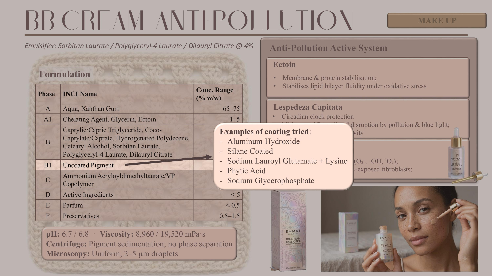

A richer, structuring O/W emulsion for daily anti-age body care — a generous multi-emollient load, a clinically supported cosmeceutical actives package.

The body cream is a thick, structuring O/W emulsion delivered from a 200 ml glass pump bottle, formulated for daily anti-age body care at generous application volumes. The pump-dispenser format ensures consistent single-action dosing, minimises hand-to-product contact and the associated risk of microbial contamination over the product's use life, and reduces waste relative to open-jar formats. Glass was retained across the whole line for its chemical inertness and its impermeability to oxygen and moisture — of particular relevance here because of the oxidation-sensitive tocopherol / ascorbyl palmitate antioxidant blend.
It exists in the thesis to validate the alkyl-polyglucoside emulsifier (C14-22 Alcohols / C12-20 Alkyl Glucoside) at the format where its intrinsic strengths matter most: high oil load and richness. Series 4 (Trial 16) confirmed the APG platform tolerates oil loads up to 30 % — well above what the ester blend or the modified starch can carry — and Series 2/3 confirmed the lamellar liquid-crystal network the APG–fatty-alcohol pair self-assembles even without added stabilisers. The very sensory attributes that ruled the APG out for a facial product (highest shine at 7.4 and highest residual amount at 7.1 of the three systems) are exactly what a nourishing body cream is supposed to deliver.
| Phase | INCI name | w/w % |
|---|---|---|
| A | Aqua | q.s. to 100 |
| A | Xanthan Gum | 0.1 – 0.5 |
| A1 | Hydroxyethylcellulose | 0.5 – 1 |
| A2 | Glycerin | 2 – 5 |
| A2 | Sodium Hyaluronate | < 1 |
| A3 | Sodium Phytate | < 0.5 |
| A3 | Allantoin | < 1 |
| A3 | Niacinamide | 1 – 5 |
| A3 | Chlorphenesin | < 0.5 |
| B | Caprylic/Capric Triglyceride | 5 – 10 |
| B | Coco-Caprylate/Caprate | 5 – 10 |
| B | C13-15 Alkane | 2 – 5 |
| B | Butyrospermum Parkii Butter | 2 – 5 |
| B | Hydrogenated Ethylhexyl Olivate, Hydrogenated Olive Oil Unsaponifiables | 2 – 5 |
| B | Caprylic/Capric/Myristic/Stearic Triglyceride | 2 – 5 |
| B | C14-22 Alcohols, C12-20 Alkyl Glucoside | 2 – 5 |
| B | Cetearyl Alcohol | 0.5 – 1 |
| C | Aqua | q.s. |
| D | Phenoxyethanol, Ethylhexylglycerin | 0.5 – 2 |
| E | Glycerin, Aqua, Hydroxypropyl Cyclodextrin, Palmitoyl Tripeptide-38 | 0.5 – 2 |
| F | Lecithin, Tocopherol, Ascorbyl Palmitate, Citric Acid | 0.5 – 2 |
| G | Gold Pearl (Mica, CI 77891, Tin Oxide) | < 1 |
| H | Parfum | < 1 |
| I | Lactic Acid, Aqua | q.s. |
Emulsification temperature of 75 °C selected to ensure complete melting and homogeneous incorporation of the shea butter, structured triglycerides and fatty alcohols — the process condition on which the intended rich, structured texture depends.
The oil phase covers all relevant lipid function classes — medium-chain triglycerides and alkyl esters for spreading and sensory lightness; C13-15 alkane as a dry-touch, non-oxidising silicone alternative; shea butter and olive unsaponifiables for occlusion and lipid replenishment; the mixed triglyceride wax for solid-phase structuring. The actives layered on top address the ECM, barrier lipids and surface turnover simultaneously.
A fatty-acid-conjugated synthetic signal peptide — lysine–threonine–threonine–lysine–serine, palmitoylated at the N-terminal lysine. Palmitoylation confers amphiphilic character, enabling the peptide to partition at lipid–membrane interfaces and to resist proteolytic degradation while remaining diffusible through the stratum-corneum lipid matrix. The KTTKTS sequence derives from the natural collagen α2 chain and, in its palmitoylated form, functions as a matrikine — a collagen-derived messenger fragment that signals dermal fibroblasts to upregulate extracellular matrix synthesis. In vitro fibroblast culture studies show simultaneous synthesis of six ECM components: collagen I, collagen III, collagen IV, fibronectin, hyaluronic acid, and laminin-5. This multi-target ECM stimulation is mechanistically superior to single-component approaches: age-related ECM deterioration involves concomitant loss of structural collagen (types I / III), basement-membrane organisation (type IV, laminin) and fibroblast–matrix adhesion (fibronectin). The hydroxypropyl cyclodextrin cavity complex protects the peptide from oxidation and hydrolysis during storage and improves bioavailability at the stratum-corneum–dermis interface.
Nicotinamide, the amide form of vitamin B3, is one of the most extensively characterised cosmetic actives in the published dermatological literature. Three mechanisms matter here. First, niacinamide is a precursor for NAD⁺ and NADP⁺, indispensable for cellular energy metabolism, DNA repair and enzymatic regulation of oxidative stress. Second, at 2 – 5 % it significantly reduces TEWL and increases stratum-corneum ceramide and free fatty acid content by stimulating serine palmitoyl transferase, the rate-limiting enzyme in the de novo ceramide biosynthesis pathway — a direct barrier reinforcement. Third, it inhibits melanosome transfer from melanocytes to keratinocytes through paracrine suppression of the PGE2 and TXB2 pathways, contributing to a more even skin tone.
5-ureidohydantoin, a purine catabolism end product with a long history in cosmetic and pharmaceutical skincare. Its three roles here are keratolytic — loosening cohesive forces between corneocytes for controlled desquamation of dull, thickened surface cells; wound-healing and anti-inflammatory — promoting fibroblast and keratinocyte proliferation; and skin-conditioning — a mild protein-denaturing action on surface keratin that softens and improves the texture of dry, rough body skin, which is the predominant surface condition targeted by this product. In this formulation, allantoin functions primarily as a soothing, skin-conditioning complementary agent to niacinamide rather than as a primary active.
The sodium salt of hyaluronic acid, a linear glycosaminoglycan of alternating N-acetyl-D-glucosamine and D-glucuronic acid units. At the concentrations employed (0.1–0.5 %) and the cosmetic-grade molecular-weight range (800 kDa – 1.2 MDa), it forms a viscoelastic hydration reservoir at the stratum corneum surface — reducing TEWL through a physical hygroscopic mechanism and reinforcing the natural moisturising factor pool. Its combination with glycerin (immediate water binding, readily absorbed into the stratum corneum) creates a synergistic humectant system that avoids the tackiness of high-concentration single-humectant formulations.
| Parameter | Result |
|---|---|
| pH (t0 / t24h) | 6.3 / 6.3 Stable and slightly acidic, appropriate for body skin; no drift over 24 h. |
| Viscosity at 2.5 rpm (t0 / t24h) | 71,600 / 76,800 mPa·s A structured, high-viscosity emulsion (98,000 mPa·s at t0 across the full rheological profile) consistent with the expected lamellar liquid-crystal network and the intended rich body-cream texture. Mild viscosity gain over 24 h reflects continued network consolidation. |
| Centrifugation test | Stable; light precipitate in gold-pigment variant only The base emulsion passes centrifugation cleanly. The mica / titanium-dioxide / tin-oxide pearl showed a light precipitate — expected behaviour for a decorative particulate additive and orthogonal to emulsion stability. |
| Optical microscopy | Coarse but uniform, 2–20 µm The broader droplet distribution is characteristic of an APG lamellar-network emulsion at high oil load, and is aligned with the intended dense, occlusive texture. |
The APG system returned the richest, most occlusive profile of the three — the highest shine score of 7.4 / 10 and the highest residual film at 7.1 / 10 — with a substantial pickup, slow spread and a lingering nourished feel that a facial product could not carry but a body cream absolutely can. The panel noted the characteristic sensory signature of a lamellar liquid-crystal network — a cushioned glide rather than a slippery one — and the shea-butter / olive-unsaponifiables contribution came through on the after-feel as softness and gentle occlusion, exactly the profile a daily anti-age body cream is supposed to leave behind.
The APG platform's intrinsic lamellar-network structuring — reflected in the very high viscosities achieved even at 2 % concentration and its self-carrying structure without added stabilisers — made it the natural candidate for a rich, structured body cream. Series 4 (Trial 16) confirmed tolerance for oil loads up to 30 %, which is the fraction the finished body cream actually carries; neither the ester blend nor the modified starch could match that headroom, and both were eliminated on that criterion alone. The very sensory attributes that had ruled the APG out for a face product — the 7.4 shine, the 7.1 residual — are precisely what is wanted here, so the sensory hierarchy became an argument in favour rather than a compromise. Pigment incompatibility was a non-issue: the body cream carries only a decorative gold pearl (mica / TiO₂ / tin oxide) as an aesthetic accent, not the trichromatic inorganic system that broke the APG in Series 7. Series 6 showed the system is sensitive to processing — the cold Lin method produced complete phase separation — so the 75 °C turbo-emulsifier route was retained and locked in to ensure full melting of shea butter, structured triglycerides and fatty alcohols.
Body care is the second front of the skinification current — the migration of active-driven skincare logic out of the facial category and into the rest of the routine. The Anti-Age Body Cream carries a matrikine peptide (Palmitoyl Tripeptide-38), an NAD⁺-precursor (Niacinamide), and dermal-repair actives (Allantoin, Sodium Hyaluronate) at concentrations that historically belonged only to serums. The 200 ml glass pump bottle, sharing the pastel iridescent glass and embossed granny-square motif of the EMMAT × Cassiopea line, holds it at a design-luxury price point where the reader now expects the same efficacy grammar from a body cream as from a facial serum.
Aqua, Caprylic/Capric Triglyceride, Coco-Caprylate/Caprate, Glycerin, Hydrogenated Ethylhexyl Olivate, Hydrogenated Olive Oil Unsaponifiables, Caprylic/Capric/Myristic/Stearic Triglyceride, C13-15 Alkane, Butyrospermum Parkii Butter, C14-22 Alcohols, C12-20 Alkyl Glucoside, Niacinamide, Phenoxyethanol, Hydroxyethylcellulose, Cetearyl Alcohol, Palmitoyl Tripeptide-38, Hydroxypropyl Cyclodextrin, Lecithin, Tocopherol, Ascorbyl Palmitate, Citric Acid, Parfum, Chlorphenesin, Mica, CI 77891, Tin Oxide, Xanthan Gum, Sodium Hyaluronate, Sodium Phytate, Allantoin, Ethylhexylglycerin, Lactic Acid.